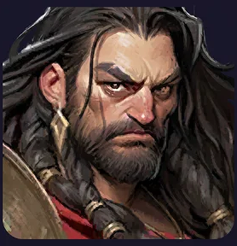
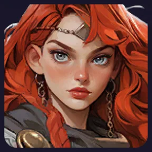
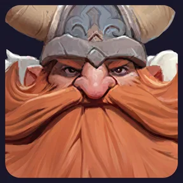

Trzy frakcje — kto kogo kontruje?
Wojownicy
Silni przeciw CzarnoksiężnikomWygodny wybór do zbudowania pierwszej spójnej piątki. W tym poradniku pokazujemy pełny skład Wojowników.
Czarnoksiężnicy
Silni przeciw ŁowcomWarto sprawdzić ich w raportach, kiedy przeciwnik często wystawia Łowców.
Łowcy
Silni przeciw WojownikomMożna nimi przełamać popularny skład oparty w całości na Wojownikach.
Wojownicy → Czarnoksiężnicy → Łowcy → Wojownicy. Sama przewaga frakcji nie wygra bitwy, jeżeli poziomy, gwiazdki i umiejętności są dużo słabsze.
Jak dużo daje wspólna frakcja?
Premia podnosi atak, obronę i życie oddziału. Najwyższy bonus uzyskasz przy pięciu postaciach z jednej frakcji.
5 Wojowników
Pełne +20% do trzech statystyk. To najprostsza baza: Arthur, Daskal, Marlena, Zoya, Harper — gdy już ich rozwiniesz.
4 Wojowników + Cynthia
Premia spada do +15%, ale Łowczyni może dać korzystną kontrę w walce z Wojownikami. Wybieraj po raportach, nie po samej mocy.
Tracisz część premii frakcyjnej. Mieszany skład ma sens, gdy konkretny bohater lub przewaga nad przeciwnikiem daje większy zysk w prawdziwej walce.
Klasy bohaterów decydują o ustawieniu
Obrońcy — przód

Ich zadanie to przyjmować ataki, chronić pozostałych i utrzymywać żołnierzy przy życiu.
Atakujący — tył

Powinni przeżyć jak najdłużej, żeby wielokrotnie użyć swoich umiejętności i zadawać obrażenia.
Wsparcie — tył

Zwiększa skuteczność innych bohaterów lub pomaga im przetrwać. Wsparcie nie musi mieć najwyższych obrażeń osobistych.
Dlaczego poziomy piątki powinny być zbliżone?
Wysoki poziom jednego bohatera nie nadrobi całkowicie bardzo niskiego poziomu pozostałych. Słabszy obrońca szybciej ginie, a wtedy przeciwnik łatwiej dociera do bohaterów atakujących i wsparcia.
Utrzymuj zbliżone poziomy całej głównej piątki. Gdy wszyscy są już na rozsądnym poziomie, dodatkowe zasoby kieruj na najważniejsze umiejętności i wyposażenie.